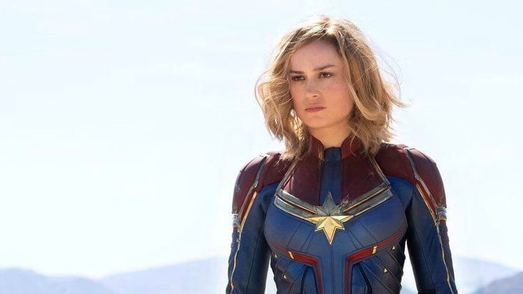

A rare glimpse into the 8th season of Game of Thrones was recently revealed, showing Arya meeting the dragons for the first time. It dosen't give a lot away, but with tensions building and just over a month until the Season 8 premiere, fans will flock to anything related to the franchise.
Season 8 will be the final season of the main Game of Thrones story, but HBO has promised serveral spin-off shows that will release after the 8th season has concluded. Fans are hoping that these will be less disapoining than some other franchises attempts at sequel and prequel stories.

Unlike the other new MCU titles this year, Captain Marvel has been met with a large degree of backlash and skepticism from the community as they critizise it for trying too hard to throw away gender steroetypes and portray a female here in a way that they believe has never been done before. Perhaps Kevin Feige didn't watch Wonder Woman, but at least fans will find out if their complaints are valid in only six days when Captain Marvel is released in cinemas.
Since Marvel is no longer a self-owned company as of 2009, if the movie dosen't generate as much money as expected because of this drama it will only be Disney that suffers from it. Luckily for them, they have more than enough money to completely abandon the Marvel Cinematic Universe and hardly notice a change in their finances, which is unfortunate for fans who want the best content avalable.